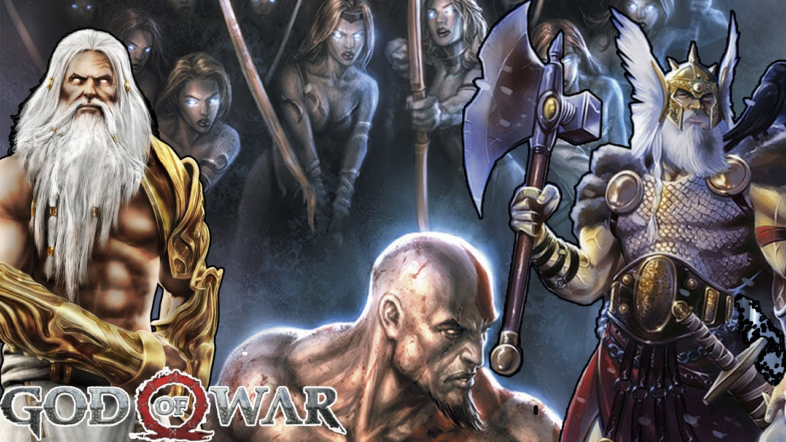

Hijo de zeus y una mujer mortal. Nacio en esparta y tiene un hermano, Deimos. fueron separados debido a una profecia que señalaba a un guerrero marcado que destruiria a los olimpos los dioses se equivocaron al recluir a Deimos
Zeus es el Rey del Olimpo, y uno de los principales antagonistas del God of War. En la mitología griega, Zeus (Ζεύς) era el rey del Olimpo, gobernante del monte Olimpo y dios del cielo, truenos y relámpagos. Sus símbolos eran el rayo, el águila, el toro, serpiente, y roble. Zeus era el hijo de la Titanes Cronos y Rea, y el más joven pero más fuertes a todos sus hermanos. Era Zeus, que llevó a sus hermanos y hermanas en la batalla contra los Titanes, alegando que el trono de su padre y desterrar a los Titanes al Tártaro. Luego se casó con su hermana Hera, diosa de las mujeres y el matrimonio. Zeus era muy conocido por sus aventuras eróticas con bellas mujeres mortales, lo que tuvo muchos descendientes, y heroica, como Atenea, Apolo, Artemisa, Hermes, Perséfone, Dioniso, Perseo, Heracles, Helena, Minos, y Kratos. Con Hera, Zeus fue padre de Ares, Hebe, Eris, y Hefesto. Su equivalente romano es Júpiter.
En la mitología griega, Afrodita (Ἀφροδίτη) era la diosa del amor, el deseo, la belleza y el sexo. Nacidos de los genitales cortados de Urano, después de que fueron lanzados al mar por Cronos. Fue a causa de su belleza que los otros dioses temían celos interrumpiría la paz entre ellos, y llevar a la guerra. Zeus la casó con Hefesto, a quien el resto de los dioses no se ven como una amenaza.
Fue El Primer Dios de la Guerra y objetivo principal de Kratos en God of War. Ares era un dios cruel que se deleitaba con la sangre y el sufrimiento, por ello nunca gozó de simpatia entre los demas dioses. Para demostrar a los dioses que era mejor que Atenea,la otra diosa de la guerra (de la guerra justa y coerente,a diferencia de Ares),ataco Atenas. Atenea encargo a Kratos que eliminara a Ares a cambio de perdonar sus pecados.
Medusa fue asesinado por el héroe Perseo antes de los acontecimientos de God of War. Sin embargo, ella hace una aparición en el juego durante el asedio de Atenas, probablemente después de Ares había resucitado, se le dio el título de Reina de las Gorgonas. Ella y su carrera se encuentran entre los ejércitos de Ares, ya que es sabido que odiaba Gorgonas Atenea. Como Kratos progresado a través de las ruinas de la ciudad, conoció a Afrodita, que le había mandado a matar a Medusa y decapitar a ella. El silbido Gorgon surgió de las sombras y lucharon con Kratos, que finalmente arrancó la cabeza de su cuerpo con sus propias manos. Satisfecho, Afrodita conceda el poder de la mirada de Medusa a Kratos, quien a su vez lo utilizó para destruir a un grupo de minotauros. La existencia de Medusa había llegado a su fin, después de esto y que eran sus hermanas, Euríale y Esteno, que se quedó para dirigir la carrera de Gorgonas hasta la muerte de Euríale a manos de Kratos en God of War II.
Heracles (en griego: Heracles, de Hera, "Hera", y kleos, "gloria") (romano: Hércules) es el hijo de Zeus y Alcmena. Hera guardaba rencor hacia él por ser "hijo de Zeus hasta el día que murió.Hércules se casó con la hija del rey Creonte, Megara. En un ataque de locura, inducida por Hera, Hércules mató a su esposa e hijos. Después de su locura se había curado con eléboro por Antikyreus, se dio cuenta de lo que había hecho, y huyó al Oráculo de Apolo en Delfos, y allí fue dirigida por el Oráculo de servir al rey Euristeo durante 10 años y realizar cualquier tarea mandado. El rey Euristeo decidió dar 10 trabajos de Hércules, pero después de terminar les dijo Hércules engañado y le dio dos más, lo que resulta en la famosa historia de la mayoría de los héroes (y uno de los más famosos de cualquier héroe griego) - los Doce Trabajos de Hércules. Hércules es considerado el ancestro de los espartanos y la familia real de Esparta. Hércules se hizo un dios Zeus por completo después de que su cuerpo mortal fue asesinado, y se fue a vivir en el Olimpo. Su historia comparte muchas similitudes con Kratos.
Atenea, también conocida como Palas Atenea, es la diosa de la civilización, la guerra, la sabiduría, la fuerza, la estrategia, artesanía, la justicia, y la habilidad. Atenea es también una compañera astuta de los héroes y la diosa del esfuerzo heroico. Es la diosa patrona Virgen de Atenas. Los atenienses construyeron el Partenón en la Acrópolis de la ciudad del mismo nombre, Atenas, en su honor.